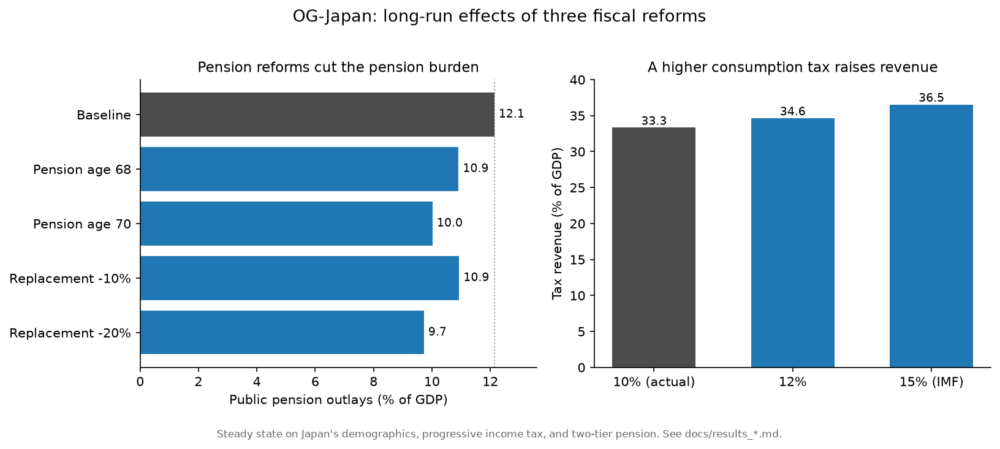

Policy results#
Three fiscal reforms that Japan is actually debating, each solved on Japan’s demographics as a long-run steady-state comparison and on the transition path.
Reform |
Long-run effect |
|---|---|
tax revenue up 1.3 and 3.2 points of GDP; consumption down, labor slightly up |
|
long-run pension outlays from 12.1 to 10.9 and 10.0 percent of GDP; labor up |
|
long-run pension outlays from 12.1 to 10.9 and 9.7 percent of GDP; labor up |


Fig. 3 Long-run effects of the three reforms.#
What the transition adds#
Each reform improves the government budget, and for the first 20 years OG-Core holds government purchases at a fixed share of GDP, so the gain goes to paying down debt. Lower debt frees household saving for private capital, so capital rises along the transition (by close to 10 percent at year 20 under the 15 percent consumption tax) even where households themselves save less. After year 20 OG-Core’s debt-closure rule brings debt back to its target and capital returns toward its new steady state, which for all three reforms is close to or slightly below the baseline. The capital gain on the path is therefore mainly a consequence of using the proceeds to reduce debt, which is how OG-Core closes the budget, not a change in household saving. Each result page measures this channel from the solved paths.
The steady-state comparison cannot show any of this, and it cannot give the year-by-year pension and revenue paths or their present values, which are what a finance ministry would weigh. The transition pages report those present values as a share of first-year GDP and in trillion yen at Japan’s FY2023 GDP.
How to read the numbers#
Parts of the calibration are still first-pass (see Taxes and Public pensions and the yen anchor), so read results for their direction and rough size rather than their last digit. Reform-minus-baseline comparisons are robust to the model’s level misses in C/Y and household wealth, because the baseline and the reform carry the same calibration. The single-period resource-constraint errors at t = 2 and t = 120 (see Initial distribution of household wealth and Demographics) are common to baseline and reform and cancel in the differences.
All results use the default calibration (progressive income tax, Japan’s two-tier pension in yen), and the transitions start from Japan’s observed initial wealth distribution (Initial distribution of household wealth).
Household solver errors in a few cohorts#
Checking the household first-order conditions along each solved transition (not only the aggregate resource constraint) found that one or two cohorts per run, entering between years 2 and 28, have large Euler-equation errors (up to about 0.7). The cause is in OG-Core: when its sparse-Jacobian household solve stops without converging, it does not fall back to dense finite differences, and the remaining retry can also stop short, with no warning. Re-solving the baseline with the dense solver removes the errors (below 1e-11) and changes the aggregates by at most 0.07 percent (labor and the interest rate, around year 9), under 0.03 percent for pension outlays and revenue. The reform effects reported here are 0.3 to 10 percent, so the results stand; at most the second decimal of some mid-path entries can move. A fix is proposed upstream (OG-Core #1294); with it, the sparse solver matches the dense solution to 4e-7 at little extra cost, and the transitions will be rerun once it is released.